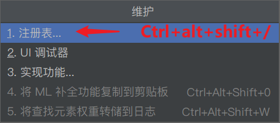

-SpringBoot的引出
优点：
spring是Java企业版（Java Enterprise Edition,JEE,也称2EE)的轻量级代替品。无需开发重量级的EnterpriseJavaBean(EJB),Spring为企业级Java开发提供了一种相对简单的方法，通过依赖注入和面向切面编程，用简单的Java对象（Plain Old Java Object,POJO)实现了EJB的功能。
缺点：
虽然Spring的组件代码是轻量级的，但它的配置却是重量级的。一开始，Spring用XML配置，而且是很多XML配置。Spring2.5引入了基于注解的组件扫描，这消除了大量针对应用程序自身组件的显式XML配置。Spring 3.0引入了基于Java的配置，这是一种类型安全的可重构配置方式，可以代替XML。所有这些配置都代表了开发时的损耗。因为在思考Spring特性配置和解决业务问题之间需要进行思维切换，所以编写配置挤占了编写应用程序逻辑的时间。和所有框架一样，Spring实用，但与此同时它要求的回报也不少。除此之外，项目的依赖管理也是一件耗时耗力的事情。在环境搭建时，需要分析要导入哪些库的坐标，而且还需要分析导入与之有依赖关系的其他库的坐标，一旦选错了依赖的版本，随之而来的不兼容问题就会严重阻碍项目的开发进度。
-SpringBoot解决的问题
SpringBoot对上述Spring的缺点进行的改善和优化，基于约定优于配置的思想，可以让开发人员不必在配置与逻辑业务之间进行思维的切换，全身心的投入到逻辑业务的代码编写中，从而大大提高了开发的效率，一定程度上缩短了项目周期。
起步依赖：
起步依赖本质上是一个Maven项目对象模型（Project Object Model,POM),定义了对其他库的传递依赖，这些东西加在一起即支持某项功能。简单的说，起步依赖就是将具备某种功能的坐标打包到一起，并提供一些默认的功能。
自动配置：
springboot的自动配置，指的是springboot会自动将一些配置类的bean注册进ioc容器，我们可以需要的地方使用@Autowired或者@Resource等注解来使用它。“自动”的表现形式就是我们只需要引我们想用功能的包，相关的配置我们完全不用管，springboot会自动注入这些配置bean,我们直接使用这些bean即可springboot:简单、快速、方便地搭建项目；对主流开发框架的无配置集成；极大提高了开发、部署效率。
[_1_] 创建一个初始化SpringBoot项目
使用IDEA创建流程


然后接着创建即可。
写一个Controller
DemoController.java
package com.zhuangjie.springboot.controller; import org.springframework.web.bind.annotation.RequestMapping; import org.springframework.web.bind.annotation.RestController; @RestController @RequestMapping("/demo") public class DemoController { @RequestMapping("/test") public String test() { return "你好，Springboot"; } }
将XXXApplication.java 类文件放在与controller 同级目录下。因为默认扫描XXXApplication.java。即可启动！

[_2_] 加入单元测试
pom.xml 依赖
<dependency> <groupId>org.springframework.boot</groupId> <artifactId>spring-boot-starter-test</artifactId> <scope>test</scope> </dependency> <!--如果spring-boot-starter-test 中没有junit，还需要导入junit--> <dependency> <groupId>junit</groupId> <artifactId>junit</artifactId> <scope>test</scope> </dependency>
测试入口： 需要在原有注解上再加入
@RunWith(SpringRunner.class) 注解
+热部署
- 加入依赖
pom.xml
<dependency> <groupId>io.gitlab.wmwtr</groupId> <artifactId>spring-boot-devtools</artifactId> <version>1.0.0.RELEASE</version> </dependency>
- 配置IDEA
配置1：

配置2：
 
- 测试比如：改变一下，访问的结果。
-利用@ConfigurationProperties文件为类属性注入值
加入依赖
pom.xml ：
<dependency> <groupId>org.springframework.boot</groupId> <artifactId>spring-boot-configuration-processor</artifactId> </dependency>
被注入值的类
- 加入@Component @ConfigurationProperties(prefix = "XXXX") 注解
- 要加入属性的set方法。
package com.zhuangjie.sx.demo.pojo; import org.springframework.boot.context.properties.ConfigurationProperties; import org.springframework.stereotype.Component; import java.util.List; import java.util.Map; @Component @ConfigurationProperties(prefix = "person") public class Person { private String name; private List<String> habbys; private Map<String,String> map; private Utils utils; @Override public String toString() { return "Person{" + "name='" + name + '\'' + ", habbys=" + habbys + ", map=" + map + ", utils=" + utils + '}'; } public String getName() { return name; } public void setName(String name) { this.name = name; } public List<String> getHabbys() { return habbys; } public void setHabbys(List<String> habbys) { this.habbys = habbys; } public Map<String, String> getMap() { return map; } public void setMap(Map<String, String> map) { this.map = map; } public Utils getUtils() { return utils; } public void setUtils(Utils utils) { this.utils = utils; } }
赋值类依赖的类：Utils.javapackage com.zhuangjie.sx.demo.pojo; import com.fasterxml.jackson.annotation.JsonFormat; import java.util.Date; public class Utils { private String utilsName; private String type; public String getUtilsName() { return utilsName; } public void setUtilsName(String utilsName) { this.utilsName = utilsName; } public String getType() { return type; } public void setType(String type) { this.type = type; } @Override public String toString() { return "Utils{" + "utilsName='" + utilsName + '\'' + ", type='" + type + '\'' + '}'; } }
配置属性
第一种：application.properties ：
person.name=zhuangjie person.habbys=吃饭,睡觉 person.map.k1=v1 person.map.k2=v2 person.utils.utilsName=box person.utils.type=vg
第二种：application.yaml
person: name: zhuangjie habbys: ['吃饭','睡觉'] map: {k1: v1,k2: v2} utils: {utilsName: box, type: vd}
顺序是：

-利用@Value() 为类属性注入值
application.yaml
utils: {utilsName: box, type: vd}
Utils.java: 在加入@Component注解基础上，在属性上加入 @Value注解（可以不要构造与set方法）。
package com.zhuangjie.sx.demo.pojo; import com.fasterxml.jackson.annotation.JsonFormat; import org.springframework.beans.factory.annotation.Value; import org.springframework.stereotype.Component; import java.util.Date; @Component public class Utils { @Value("${utils.utilsName}") private String utilsName; @Value("${utils.type}") private String type; @Override public String toString() { return "Utils{" + "utilsName='" + utilsName + '\'' + ", type='" + type + '\'' + '}'; } }
单元测试：
package com.zhuangjie.sx.demo; import com.zhuangjie.sx.demo.pojo.Person; import com.zhuangjie.sx.demo.pojo.Utils; import org.junit.jupiter.api.Test; import org.junit.runner.RunWith; import org.springframework.beans.factory.annotation.Autowired; import org.springframework.boot.test.context.SpringBootTest; import org.springframework.test.context.junit4.SpringRunner; @RunWith(SpringRunner.class) @SpringBootTest class DemoApplicationTests { @Autowired private Utils utils; @Test void contextLoads() { System.out.println(utils); } }
-使用自定义properties文件为类注入属性
将注入属性值的类
Utils.java：
需要
@Component
@PropertySource("classpath:test.properties") //指定的配置文件
@ConfigurationProperties(prefix = "utils") //具体哪个为类配置值
需要set方法。
package com.zhuangjie.sx.demo.pojo; import com.fasterxml.jackson.annotation.JsonFormat; import org.springframework.beans.factory.annotation.Value; import org.springframework.boot.context.properties.ConfigurationProperties; import org.springframework.context.annotation.PropertySource; import org.springframework.stereotype.Component; @Component @PropertySource("classpath:test.properties") //指定的配置文件 @ConfigurationProperties(prefix = "utils") //具体哪个为类配置值 public class Utils { private String utilsName; private String type; public String getUtilsName() { return utilsName; } public void setUtilsName(String utilsName) { this.utilsName = utilsName; } public String getType() { return type; } public void setType(String type) { this.type = type; } @Override public String toString() { return "Utils{" + "utilsName='" + utilsName + '\'' + ", type='" + type + '\'' + '}'; } }
自定义一个properties文件
test.properties
utils.utilsName= io utils.type= vg
单元测试
package com.zhuangjie.sx.demo; import com.zhuangjie.sx.demo.pojo.Person; import com.zhuangjie.sx.demo.pojo.Utils; import org.junit.jupiter.api.Test; import org.junit.runner.RunWith; import org.springframework.beans.factory.annotation.Autowired; import org.springframework.boot.test.context.SpringBootTest; import org.springframework.test.context.junit4.SpringRunner; @RunWith(SpringRunner.class) @SpringBootTest class DemoApplicationTests { @Autowired private Utils utils; @Test void contextLoads() { System.out.println(utils); } }
-使用自定义配置类创建Bean
配置类
与controller下创建一个config文件夹，里面创建类：
MyService.java
package com.zhuangjie.sx.demo.config; import com.zhuangjie.sx.demo.pojo.Utils; import org.springframework.context.annotation.Bean; import org.springframework.context.annotation.Configuration; @Configuration public class MyService { @Bean("zjazn") //存放的Bean的名称，否则默认是方法名 MyUtils public Utils MyUtils() { Utils utils = new Utils(); utils.setUtilsName("不木"); utils.setType("99"); return utils; } }
单元测试
package com.zhuangjie.sx.demo; import com.zhuangjie.sx.demo.pojo.Person; import com.zhuangjie.sx.demo.pojo.Utils; import org.junit.jupiter.api.Test; import org.junit.runner.RunWith; import org.springframework.beans.factory.annotation.Autowired; import org.springframework.boot.test.context.SpringBootTest; import org.springframework.context.ApplicationContext; import org.springframework.test.context.junit4.SpringRunner; @RunWith(SpringRunner.class) @SpringBootTest class DemoApplicationTests { @Autowired private Utils utils; @Autowired private ApplicationContext context; @Test void contextLoads() { //查看是否存在zjazn这个Bean System.out.println(context.containsBean("zjazn")); } }
-随机数设置
在properties配置文件配置值时，可以通过以下设置不同类型的随机值, 到时候获取时，就是生成的随机值，这里就不作测试了。
application.properties：
utils.type=${random.value}
规则：
my.secret=${random.value} //配置随机值 my.number=${random.int} //配置随机整数 my.bignumber = $ { random.long ) //配置随机long类型数 my.uuid=${random.uuid} //配置随机uuid类型数 my.number.less.than.ten=${random.int(10)} //配置小于10的随机整数 my.number.in.range=${random.int[1024,65536]) //配置范围在[1024,65536]之间的随机整数
-引用间引用(属性抽取公用)
application.properties:
zjazn.user=${random.value} utils.utilsName=${zjazn.user}
[_3_] 整合MyBaties
注解的方式
pom.xml :引入依赖
<!--整合mybaties--> <dependency> <groupId>org.mybatis.spring.boot</groupId> <artifactId>mybatis-spring-boot-starter</artifactId> <version>2.1.2</version> </dependency> <dependency> <groupId>mysql</groupId> <artifactId>mysql-connector-java</artifactId> <scope>runtime</scope> </dependency>
application.properties: 配置数据库连接信息
#MySQL数据库连接配置 , com.mysql.cj.jdbc.Driver 无需再写驱动 ,内部已经注册 spring.datasource.url=jdbc:mysql://localhost:3306/bank?serverTimezone=UTC spring.datasource.username=root spring.datasource.password=3333 #配置驼峰 ,即能将数据库的xx_yy列，映射为实体的xxYy，否则该列将无值。 mybatis.configuration.map-underscore-to-camel-case=true
dao → User.java 写表对应的实体
package com.zhuangjie.sx.demo.pojo; public class User { private Integer userId; private String name; private Integer money; //忽略了 get set方法... //忽略了 toString方法... }
mapper → UserMapper.java 接口
package com.zhuangjie.sx.demo.mapper; import com.zhuangjie.sx.demo.pojo.User; import org.apache.ibatis.annotations.Mapper; import org.apache.ibatis.annotations.Select; import org.springframework.stereotype.Component; import java.util.List; @Component //标记为这是一个组件 @Mapper //标记为mapper类 public interface UserMapper { @Select("select * from user") //注解方法 List<User> queryAll(); }
测试: 注入，调用方法
XML方式
pom.xml :引入依赖
<!--整合mybaties--> <dependency> <groupId>org.mybatis.spring.boot</groupId> <artifactId>mybatis-spring-boot-starter</artifactId> <version>2.1.2</version> </dependency> <dependency> <groupId>mysql</groupId> <artifactId>mysql-connector-java</artifactId> <scope>runtime</scope> </dependency>
application.properties: 配置数据库连接信息
#MySQL数据库连接配置 , com.mysql.cj.jdbc.Driver 无需再写驱动 ,内部已经注册 spring.datasource.url=jdbc:mysql://localhost:3306/bank?serverTimezone=UTC spring.datasource.username=root spring.datasource.password=3333 #配置驼峰 ,即能将数据库的xx_yy列，映射为实体的xxYy，否则该列将无值。 mybatis.configuration.map-underscore-to-camel-case=true #配置mybaties的xml配置文件路径 mybatis.mapper-locations=classpath:mapper/*.xml
dao → User.java 写表对应的实体
package com.zhuangjie.sx.demo.pojo; public class User { private Integer userId; private String name; private Integer money; //忽略了 get set方法... //忽略了 toString方法... }
mapper → UserMapper.java 接口
package com.zhuangjie.sx.demo.mapper; import com.zhuangjie.sx.demo.pojo.User; import org.apache.ibatis.annotations.Mapper; import org.apache.ibatis.annotations.Select; import org.springframework.stereotype.Component; import java.util.List; //标记为这是一个组件, 可以在启动类中加@MapperScan代替，不然每个Mapper接口都要写。 @Component @Mapper //标记为mapper类 public interface UserMapper { User queryById(Integer user_id); }
配置XML
因为我们指定了xml的位置在classpath:mapper 下所以
UserMapper.xml
<?xml version="1.0" encoding="UTF-8" ?> <!DOCTYPE mapper PUBLIC "-//mybatis.org//DTD Mapper 3.0//EN" "http://mybatis.org/dtd/mybatis-3-mapper.dtd"> <mapper namespace="com.zhuangjie.sx.demo.mapper.UserMapper"> <select id="queryById" resultType="com.zhuangjie.sx.demo.pojo.User" parameterType="int"> select * from user where user_id = #{user_id} </select> </mapper>
测试: 注入，调用方法
改善
改善1：mapper接口上的@Component注解，可以去掉，在springboot启动类上加@MapperScan("com.zhuangjie.sx.demo.mapper") 注解来指定mapper接口在哪里。

改善2：xml配置实体的别名设置
application.properties：追加
#配置mybaties映射配置文件中实体类别名 mybatis.type-aliases-package=com.zhuangjie.sx.demo.pojo
以前要用pojo实体类的全类名作xml中的返回值或参数，现在只需要用该类的首字母小写来代替了

会出现一个问题：